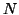
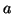
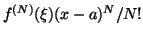
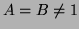
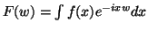
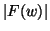
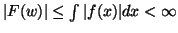
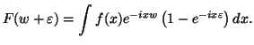

Next: Pourquoi la transformée de
Up: Un peu de théorie
Previous: Quel est l'importance d'avoir
Contents
Qu'est-ce que le nombre de moments nuls et quel lien fait-on avec
la régularité?
On dit qu'une ondelette a  moments nuls si pour
,
. En particulier, toute ondelette se
doit d'avoir au moins un moment nul.
Brièvement, on peut expliquer l'utilité pratique d'avoir un bon nombre
de moments nuls, supposons qu'on prend la transformée par ondelettes
de  avec des ondelettes ayant un support compact et moments
nuls, localement, nous supposons que a l'expansion de Taylor

Nous avons alors

où l'intégrale n'est prise que dans la voisinage de sujet à l'expansion
de Taylor. On suppose ici implicitement que le support de l'ondelette
est comprise dans ce voisinage, mais pour une fonction partout régulière,
on peut faire l'expansion de Taylor pour n'importe quel  et on
peut donc centrer l'expansion dans le support de l'ondelette. Comme
on peut le voir, un grand nombre de moments nuls nous permet d'affirmer
que pour une fonction très régulière, les coefficients d'ondelettes
seront petits. Ce détail est important pour les applications. Comme
la fonction d'erreur prend localement la forme

(théorème de Taylor), on voit que plus les ondelettes auront un petit
support, plus les coefficients d'ondelette seront petits. En prenant
donc le ratio des coefficients d'ondelettes correspondant à des échelles
différentes, on peut donc espérer mesurer la régularité de .
En résumé, pour une fonction très régulière, les coefficients
d'ondelette seront petits, et cela est d'autant plus vrai pour les
ondelettes très localisées (échelles fines).
Next: Pourquoi la transformée de
Up: Un peu de théorie
Previous: Quel est l'importance d'avoir
Contents
Daniel Lemire
2004-02-02